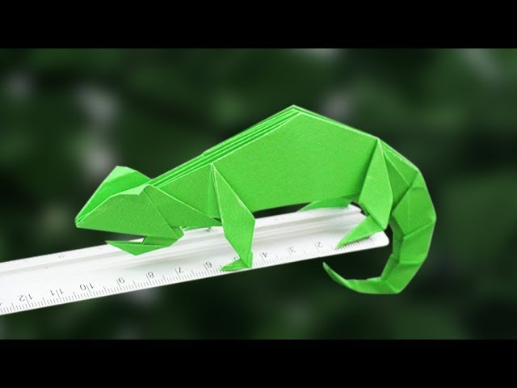

How to make an origami chameleon
- Chameleans are reptiles that are part of the iguana suborder
- Changing skin color is an important part of communication among chameleons
- Most chameleons have a prehensile tail that they use to wrap around tree branches

How to make an origami pigeon
- Pigeons are smart animals
- Pigeons are renowed for their outsanding navigational abilities
- Pigeons have excellent hearing abilities
How to make an origami camel
- Camels have 3 sets of eyelids
- Camels have thick lips to help them eat plants other animals can't
- There are 2 types of camels, one humped and two humped camels
How to make an origami bear
- Bears are extremely intelligent
- bears care deeply about family members
- bears have very good senses

How to make an origami panda
- They have great camouflage for their environment
- Bamboo is critical to their diet.
- Their eyes are different to normal bears.
How to make an origami cicada
- cicadas only come once every 17 years
- cicadas have bright red eyes
- cicadas are blind